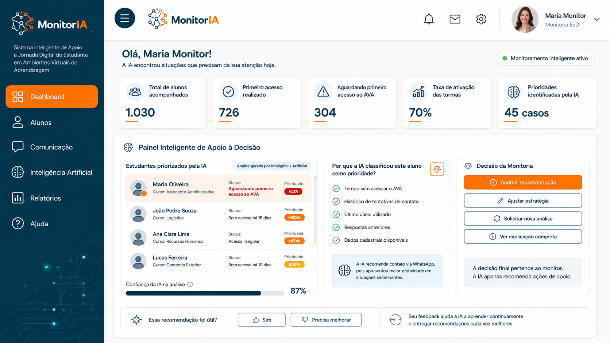

Explicação completa da IA – Maria Oliveira
Recomendação: contato via WhatsApp, que apresentou maior efetividade em situações semelhantes.
Fatores considerados: tempo sem acessar o AVA; histórico de tentativas de contato; último canal utilizado; respostas anteriores; dados cadastrais disponíveis.
Confiança da IA na análise: 87%.
A decisão final pertence ao monitor. A IA apenas recomenda ações de apoio.